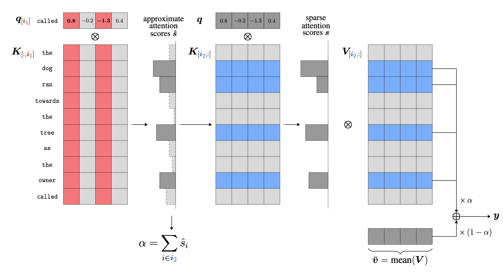
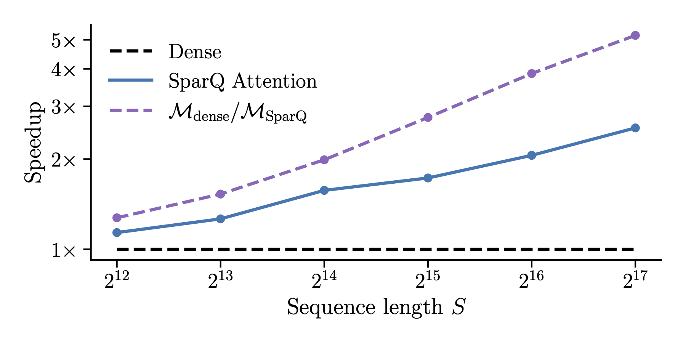

Speeding up LLM inference using SparQ Attention & llama.cpp
With the rapid advances in the capabilities of large language models (LLMs), there is an increasing need for efficient inference platforms that would enable fast and cheap LLM integration, especially following the release of powerful openly-available models such as Meta's Llama 3.1, Google's Gemma 2, and Mistral 7B.
One such platform is llama.cpp, a C/C++ library for fast inference supporting both CPU and GPU hardware. Although highly performant, it suffers from the same fundamental bottleneck common to any transformer inference platform — to generate each new token, all of the model parameters, as well as the previous state (the KV cache) need to be fetched from memory. Although the first limitation can be significantly overcome by storing the weights in low precision and by batching user requests, the latter increasingly becomes the limiting factor as the length of the text sequences increases. The time taken to fetch the data from memory fully dominates the latency during long-sequence generation, irrespective of the hardware platform used.
In this blog post, we will utilise the ggml library that llama.cpp is built upon, and show how the attention module can be made more efficient by sparsely accessing its history during generation. For this, we will be implementing our recently published technique called SparQ Attention, which selectively fetches only the most important tokens from the memory at each generative step.
By the end of the blog you will:
* Familiarise yourself with the basics of llama.cpp inference platform and the ggml library.
* Understand how to write an efficient attention kernel in C++ by implementing the SparQ Attention method.
You can find our full code on GitHub here.
What is llama.cpp?
llama.cpp is an LLM inference library built on top of the ggml framework, a tensor library for AI workloads initially developed by Georgi Gerganov. It is designed to be a lightweight, low-level library written in C that enables fast transformer inference on CPU (see this recent tutorial on getting started).
We will not go through all of the details of the two libraries, but will focus on the implementation of the sparse attention module in C++ and how to integrate it within the libraries. For this, we will mainly need to understand how tensors are stored and manipulated, as well as how ggml handles ops.
Attention operation: the memory bottleneck
Before we dive into the implementation details, let's take a quick look at the standard attention operation for a single head and a single batch:
where \(\boldsymbol{q}\), \(\boldsymbol{K}\), and \(\boldsymbol{V}\) are the query, key, and value tensors, \(d_h\) is the head dimension, and \(\boldsymbol{y}\) is the output of the attention head.
Here, \(\boldsymbol{K}\) and \(\boldsymbol{V}\) both have the same shape \(S \times d_h\) (where \(S\) is the sequence length), while \(\boldsymbol{y}\) and \(\boldsymbol{q}\) either have the shape \(S \times d_h\) (prefill stage), or shape \(1 \times d_h\) (generation stage), with the latter being the case we are focusing on in this blog.
In order to calculate the output, we need to fetch the full \(\boldsymbol{K}\) and \(\boldsymbol{V}\) tensors from memory each time – assuming 16-bit precision, for LLama 2 7B and 128k sequence this is 67GB at each step!
Sparsely accessing the cache: SparQ Attention
Fetching the full \(\boldsymbol{K}\) and \(\boldsymbol{V}\) tensors at each generative step is wasteful, as the model generally only attends to small parts of the history when predicting the next token. This is the main idea of the SparQ Attention technique: predict the most important key-value pairs and selectively fetch them from memory at each step.

The algorithm is simple and consists of three main steps:
-
Find the top-\(k_1\) largest components of the incoming query vector and gather the corresponding components along the hidden dimension of the key cache \(\boldsymbol{K}\). This allows us to calculate an approximation of the full attention scores \(\boldsymbol{\hat{s}}\).
-
Identify the top-\(k_2\) largest scores in the approximation and gather the corresponding full key and value vectors from the cache.
-
The output is calculated as a weighted average of the attention output using the top-\(k_2\) key-value pairs, and a running-mean value vector \(\boldsymbol{\bar{v}}\).
For simplicity, our C++ implementation presented here will skip the additional running-mean value calculation and only use the attention output from the top-\(k_2\) keys and values.
SparQ Attention in C++
Let's now look into implementing a fast SparQ Attention kernel in C++. For this, we will first develop the kernel independently of the ggml framework, and then afterwards see how we can integrate it into the library so it can be run through llama.cpp.
We will write a kernel operating on a single attention head, which we can then run in parallel across the CPU threads during inference.
Function prototype
void sparq(const float *q,
const float *K, int K_stride,
const float *K_t, int K_t_stride,
const float *V, int V_stride,
const float *V_t, int V_t_stride,
int seq_len, int head_dim,
int k1, int k2, float *out);
We first start with the function declaration in order to define the inputs and the output of the function.
The inputs to our function are the query q, key tensor K, and value tensor V, as well as the SparQ hyperparameters determining the level of sparsity: k1 , and k2.
For each input tensor, we pass two arguments: a pointer to the first element for the current attention head, and the corresponding stride, i.e. the distance between consecutive elements across its second dimension. Importantly, the tensors can either be stored in memory as row-major (elements within a row are next to each other in memory), or column-major (elements within a column are next to each other in memory). We will refer to the former as the default layout, and the latter as transposed, noting the tensors with an additional _t suffix. Most generically, the function would accept either format for the key and value tensors.
However, in order to maximise the efficiency of sparse memory access, we ideally would like to access contiguous blocks in memory each time. In SparQ, during the first step, we are sparsely fetching columns of the key tensor, while during the second step, we sparsely fetch rows. For the maximum speedups, we thus keep both K and K_t in memory. In addition, we find that for the second step, we ideally want to keep the value tensor in the default row-major layout as value vectors are sparsely fetched across the sequence dimension (but our function supports either format).
We will write the output of the attention head to the memory pointed to by out pointer, assuming the row-major format.
The SparQ Algorithm
Let's now look into the implementation of the two SparQ algorithm steps. To help readability, we will be using a few helper functions whose individual implementations can be found at the end of the section.
Step 1: Approximate query-key dot-product
We implement Step 1 such that it supports both row-major and column-major layout of the \(\boldsymbol{K}\) tensor. However, the column-major (K_t) is significantly faster, which is why we keep a copy of the tensor in this format in memory for maximum speed-up. Note that we use the std::pair to keep track of the index-value pairs of the original vector.
// Index-value pair
using P = std::pair<int, float>;
// Approximate attention scores, s -- (seq_len,)
std::vector<float> s_hat(seq_len, 0.0f);
// Indices of the largest k1 elements of the query vector
std::vector<P> idx1 = topk(q, head_dim, k1, /*use_abs=*/true);
if (K_t != nullptr) {
// For each idx in idx1
for (P p : idx1) {
// s_hat += q[idx] * K[:, idx]
scaled_add(q[p.first], K_t + p.first * K_t_stride, seq_len, s_hat.data());
}
} else {
for (int i = 0; i < seq_len; i++) {
// s_hat[i] = sum(q[idx] * K[i, idx]) for all idx in idx1
s_hat[i] = dot_product_index_both(q, K + i * K_stride, idx1);
}
}
Step 2: Approximate attention using top-\(k\) key-value pairs
When calculating the final attention output, we again support both layouts for the tensor \(\mathbf{V}\). In this case, since we are accessing the full vectors sparsely across the sequence, the kernel is faster when \(\mathbf{V}\) is row-major, i.e. when V is used instead of V_t.
// Indices of the top k2 approximate scores
std::vector<P> idx2 = topk(s_hat.data(), s_hat.size(), k2, /*use_abs=*/false);
// Calculate scores for top k2, s -- (k2,)
std::vector<float> s(k2, 0.0);
for (int i = 0; i < k2; i++) {
// qk = q @ K[idx, :].T for each idx in idx2
auto qk = dot_product(q, K + idx2[i].first * K_stride, head_dim);
s[i] = qk / std::sqrt(static_cast<float>(head_dim));
}
softmax(s.data(), s.size());
// Perform weighted sum of values
if (V != nullptr) {
std::fill(out, out + head_dim, 0.0f);
for (int i = 0; i < k2; i++) {
// out += s[i] * V[idx2[i], :]
scaled_add(s[i], V + idx2[i].first * V_stride, head_dim, out);
}
} else if (V_t != nullptr) {
for (int j = 0; j < head_dim; j++) {
// out[j] = sum(s[i] * V[idx2[i], j]) for all i
out[j] = dot_product_index_second(s.data(), V_t + j * V_t_stride, idx2);
}
}
Helper function implementations
Top-\(k\)
The top-\(k\) operation is utilised in both Step 1 and 2 of the algorithm. As in both cases the output does not need to be sorted, we can implement an efficient \(\mathcal{O}(N)\) top-\(k\) operation by using the nth_element function from the standard C++ library, re-arranging the array such that the first \(k\) elements are the largest elements within the array.
std::vector<P> topk(const float *x, int size, int k, bool use_abs) {
std::vector<P> x_idxs;
x_idxs.reserve(size);
for (int i = 0; i < size; i++) {
x_idxs.emplace_back(i, use_abs ? std::abs(x[i]) : x[i]);
}
if (k >= size) {
return x_idxs;
}
std::nth_element(x_idxs.begin(), x_idxs.begin() + k - 1, x_idxs.end(), [](P a, P b)
{ return a.second > b.second; });
x_idxs.resize(k);
return x_idxs;
}
Softmax
We implement the standard softmax function in C++ as follows:
void softmax(float *x, int size) {
float max_val = *std::max_element(x, x + size);
float tot = 0.0;
for (int i = 0; i < size; i++) {
x[i] = std::exp(x[i] - max_val);
tot += x[i];
}
for (int i = 0; i < size; i++) {
x[i] /= tot;
}
}
Dot-product (standard)
This is just a standard, no-frills vector dot-product. Note the usage of the __restrict__ keyword: it tells the compiler that the pointers are pointing to separate blocks in memory that do not overlap, which can lead to additional performance optimisations.
float dot_product(const float *__restrict__ a, const float *__restrict__ b, int n) {
auto sum = 0.0f;
for (auto i = 0; i < n; ++i) {
sum += a[i] * b[i];
}
return sum;
}
Scaled add
This is another simple helper function that multiplies the input vector with scale and adds it to the output.
void scaled_add(float scale, const float *__restrict__ data, int n, float *__restrict__ out) {
for (auto i = 0; i < n; ++i) {
out[i] += scale * data[i];
}
}
Dot-product (index second vector)
Here we implement a sparse dot-product where the second vector is sparsely accessed based on the indices in idx.
float dot_product_index_second(const float *__restrict__ a, const float *__restrict__ b, const std::vector<P>& idx) {
float sum = 0.0f;
for (int i = 0; i < static_cast<int>(idx.size()); ++i) {
sum += a[i] * b[idx[i].first];
}
return sum;
}
Dot-product (index both vectors)
Finally, we implement a sparse dot-product where both vectors are sparsely accessed based on the indices idx.
float dot_product_index_both(const float *__restrict__ a, const float *__restrict__ b, const std::vector<P>& idx) {
auto sum = 0.0f;
for (P p : idx) {
sum += a[p.first] * b[p.first];
}
return sum;
}
Low-precision implementations
The functions above assumed single-precision values (
float32). Our codebase however also supports half-precision inputs (float16) through the AVX-512 instruction set, which uses specialised dot-product implementations for the above functions that utilise the 512-bit instruction set for fast parallel addition. For simplicity we only cover the single-precision implementations here, but the reader can refer to our codebase for the full implementation.
Putting it all together
We now have a working SparQ Attention function in C++! However, we need to do a bit more work in order to integrate it within the llama.cpp library, mainly:
- Write a
ggmlcustom op that will call our C++ SparQ Attention kernel. - Save the KV cache in the SparQ-preferred memory layout to obtain maximum inference speed-up.
- Call the SparQ Attention op during the generation stage of inference (while using the default attention implementation during prefill).
Let's briefly look into the essential parts of the integration.
Note that we will only highlight the most important aspects of the code, so please refer to the full implementation for all of the details.
Writing a ggml custom op: ggml_sparq_attn
In order to write our custom attention op, most importantly we need to understand how tensors are stored and manipulated in ggml.
How are tensors stored in ggml?
In ggml, tensors are stored as special struct ggml_tensor objects, similarly to how torch.Tensor objects operate in PyTorch. Apart from storing important information about the computational graph, ggml_tensor mainly stores information about the data through the following variables:
ggml_type: The datatype of the tensor, which could be an integer type, a float type (mainly single-precisionfloat32or half-precisionfloat16), or one of the several supported quantised types.ne: Array storing the number of elements in each dimension. Note that the order of dimensions is inverted to the standard ordering in frameworks such as PyTorch, so that a matrix \(a \times b\) would havene[0] = bandne[1] = a.nb: Array storing strides, which indicate the distance in bytes of consecutive elements along the specified dimension. So for anfloat32matrix \(a \times b\), corresponding strides would benb[0] = 4(as every value takes four bytes) andnb[1] = 4 * b.data:voidpointer pointing towards the beginning of the memory block containing the tensor.
Registering a custom op
We start by defining our SparQ op within ggml:
struct ggml_tensor * ggml_sparq_attn(
struct ggml_context * ctx,
struct ggml_tensor * q,
struct ggml_tensor * K,
struct ggml_tensor * K_t,
struct ggml_tensor * V,
struct ggml_tensor * V_t,
struct ggml_tensor * kq_mask,
int seq_len,
int k1,
int k2);
We can see that the declaration is very similar to our previous C++ kernel! (within the body we need to add additional boilerplate code for registering the inputs and outputs). Note however one important distinction: here we are passing the full q, K, and V tensors, while our kernel executes per-head. We thus need to pass the appropriate per-head data pointers when we call the individual attention head kernels.
Calling the SparQ kernel
Associated with the function declaration is the forward op that will be called during the execution of the program, ggml_compute_forward_sparq_attn. We need to make sure that each CPU thread executes the appropriate attention head workload, which is achieved in the following part of the code:
for (int ith = params->ith; ith < n_heads; ith += params->nth) {
if (kv_type == GGML_TYPE_F32) {
sparq(
(float*) ((char*) q->data + ith * q->nb[2]), // q
(float*) ((char*) K->data + ith * K->nb[2]), // K
K->nb[1] / kv_elem_size, // K.stride
K_t ? (float*) ((char*) K_t->data + ith * K_t->nb[2]) : 0, // K_t
K_t ? K_t->nb[1] / kv_elem_size : 0, // K_t.stride
V ? (float*) ((char*) V->data + ith * V->nb[2]) : 0, // V
V ? V->nb[1] / kv_elem_size : 0, // V.stride
V_t ? (float*) ((char*) V_t->data + ith * V_t->nb[2]) : 0, // V_t
V_t ? V_t->nb[1] / kv_elem_size : 0, // V_t.stride
seq_len,
head_dim,
k1,
k2,
(float*) ((char*) dst->data + ith * dst->nb[2]) // out
);
Here we can see that based on the current thread ID ith, we pass the pointers to the first elements of appropriate head's tensors. We also make sure that all threads are assigned the head workloads sequentially, so that we can maximise the parallelism of the program execution.
Integrating into llama.cpp
Having written a custom SparQ Attention op in ggml, the final part is to call the op within the llama.cpp library during inference. We won't go into the full details here, but the main changes we implement are the following:
- Save the KV cache in the SparQ-preffered memory layout. By default,
llama.cppsaves the \(\boldsymbol{K}\) cache in the row-major format, and the \(\boldsymbol{V}\) cache in the column-major format. However, as we covered earlier, our implementation benefits from having both row and column-major copies of the \(\boldsymbol{K}\) tensor, as well as the \(\boldsymbol{V}\) tensor in the row-major format. We thus make the additional modifications to the KV cache storage when SparQ Attention is used. - Finally, we call the SparQ Attention during generation by checking if the sequence dimension of the query vector is equal to one.
Running inference with SparQ enabled
To enable SparQ during inference, additional
--sparqflag should be passed, along with--k1 valand--k2 valto set the appropriate sparsity level. By default, the KV cache will be saved in the alternate, SparQ-preferred layout — to disable this and use the default layout the additional--sparq-default-layoutmay be passed.
Well, how fast is it?
Finally, we can measure the latency of our implementation and see how it stacks up against the standard full-access attention!
We do this by first generating the KV cache for a prefill of a given sequence length, and then measuring the time it takes to generate a single new token. For this experiment we used Llama 2 7B, keeping the model weights in 8-bit, and the KV cache in 16-bit. We chose the k1 and k2 hyperparameters such that the data transfer compression is fixed to 1/8 within the attention layer.

The blue line in the plot indicates the achieved speed-up of SparQ Attention against the sequence length of the input sequence, while the dashed purple line showcases the theoretical speed-up considering only the ratio of data transferred. We can see that as the sequence is increased, our sparse attention implementation is indeed able to showcase significant speed-ups against the default implementation. The gap between the practical and theoretical speed-up indicates the additional latency overheads due to non-memory-bound operations such as top-\(k\), and may offer some room for improvement!
Conclusion
In this post we have looked into ggml and llama.cpp, and how to implement a custom attention kernel in C++ that can lead to significant speed-ups when dealing with long sequences using SparQ Attention. If any of it sparked your interest (no pun intended), please do not hesitate to get in touch!